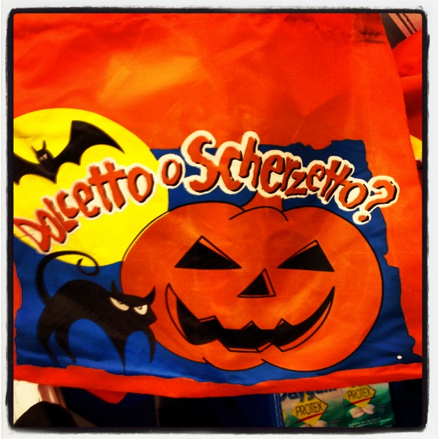

How do you say "Trick or Treat" in Italian? It's "Dolcetto o Scherzetto". Actually, now that I think about it, it looks like Italians have inverted the sequence of words, because Dolcetto (Treat) comes before Scherzetto (Trick).
Halloween is a holiday that is gaining popularity in Italy, but for us the Carnevale (usually in February or March) is still the winner when it comes to costumes and traditions. Schools even close for a couple of days during this time. The few people celebrating Halloween in Italy take it very seriously though, I would even say more seriously than Americans. Why? Because the only costumes you see around on October 31st are only witches, skeletons, or bats, and not princesses, Spider men or dinosaurs.
Parties are also more popular than trick or treating. Which makes you think that probably adults celebrate more than kids... As for the pumpkin carving, only a few people do it, I think mostly because stores don’t sell as many pumpkins as in the States, or maybe because people are just not into that yet.
What about the candies? Italian stores don't have aisles with industrial quantities of these sugary treats. Luckily this is something we haven't copied from Americans yet. However, you can certainly find some delish cakes or pastries in the shape of pumpkins or spider webs. Call it Halloween on a different level.